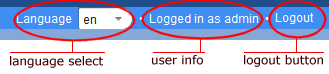

Rich Platform project for Java web applications.
This project is maintained by aktion-hip
The toolbar service allowes bundles to contribute their toolbar items the application's toolbar.
 In the case of the Ripla demo application, the toolbar contains three toolbar items: a language select, a user info label and a logout button (in the case of running the application with login enabled).
The demo application's component description for the toolbar service looks as follows:
<?xml version="1.0" encoding="UTF-8"?> <components xmlns:scr="http://www.osgi.org/xmlns/scr/v1.1.0"> <scr:component xmlns:scr="http://www.osgi.org/xmlns/scr/v1.1.0" name="org.ripla.demo.toolbar.language"> <implementation class="org.ripla.demo.scr.ToolbarItemLanguage"/> <property name="service.pid" value="org.ripla.web.configuration"/> <service> <provide interface="org.ripla.web.services.IToolbarItem"/> </service> </scr:component> <scr:component xmlns:scr="http://www.osgi.org/xmlns/scr/v1.1.0" name="org.ripla.demo.toolbar.user"> <implementation class="org.ripla.demo.scr.ToolbarItemUsername"/> <service> <provide interface="org.ripla.web.services.IToolbarItem"/> </service> </scr:component> <scr:component xmlns:scr="http://www.osgi.org/xmlns/scr/v1.1.0" name="org.ripla.demo.toolbar.logout"> <implementation class="org.ripla.demo.scr.ToolbarItemLogout"/> <service> <provide interface="org.ripla.web.services.IToolbarItem"/> </service> </scr:component> </components>
Responsible for the toolbar items a the three implementation classes org.ripla.demo.scr.ToolbarItemLanguage (language select), org.ripla.demo.scr.ToolbarItemUsername (user info) and org.ripla.demo.scr.ToolbarItemLogout (logout button). The interface these classes implement looks as follows:
public interface IToolbarItem {
IToolbarItemCreator getCreator();
Component getComponent();
void registerToolbarActionListener(IToolbarActionListener inListener);
int getPosition();
}IToolbarItem.getCreator() returns a toolbar item factory to create the toolbar item's ui component. May be null if getComponent() is defined.
IToolbarItem.getComponent() returns the toolbar item's ui component. May be null if getCreator() is defined.
See Creating Toolbar Items for more information about toolbar item creation.
IToolbarItem.registerToolbarActionListener(IToolbarActionListener inListener) registers a listener to IToolbarAction events. See Toolbar Events for more information how to propagate toolbar actions.
IToolbarItem.getPosition() returns the item's position on the toolbar. The items are placed from right to left on the toolbar. The higher the value, the higher the position from the right margin.